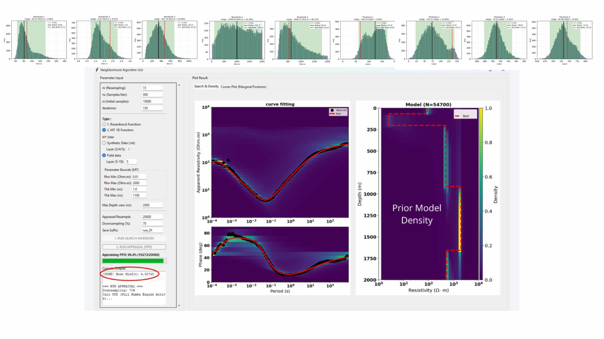

Research

1D MT Inversion & Uncertainty Analysis
Python workflows for 1D Magnetotelluric forward modeling, inversion & uncertainty analysis using Sambridge's Neighborhood Algorithm. Optimized with Numba JIT & Joblib parallelization. GUI + CLI.
PythonNumPyNumbaJoblibAlgorithmMT